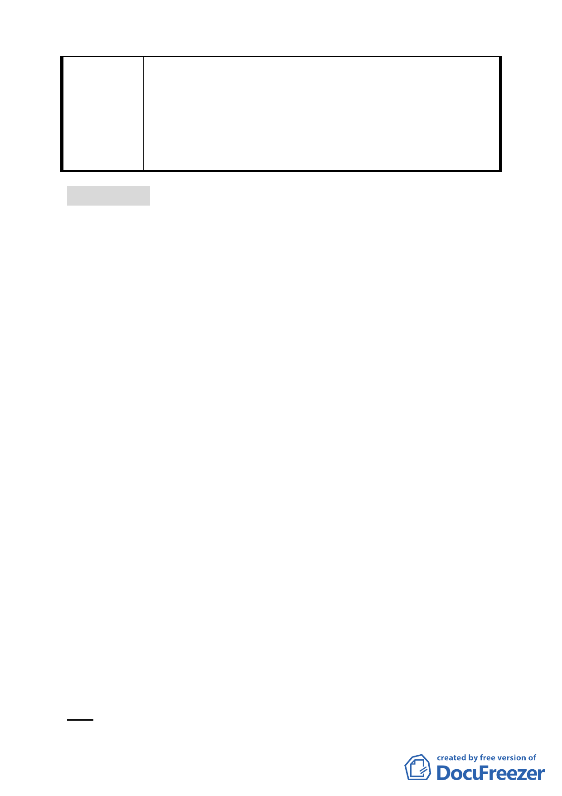

特定專用區細部計畫案」計畫書之附圖標示尺寸有 10 公尺與
20 公尺二種版本，經檢視計畫內容核算開放空間之 20 公尺
帶狀式開放空間長度及面積，確認 R6 街廓指定帶狀式開放空
間應為 20 公尺無誤，本府於後續辦理配地發還作業時亦已考
量基地深度開發需求，本次通盤檢討作業係就圖面不一致部
分進行釐正，未涉及變更計畫。
討論事項 五
案名：變更臺北市士林區至善段五小段 80、81、117 地號等加油
站用地為公園用地細部計畫案
案情概要說明：
一、本案基地位於本市士林區至善路以北，至德公園及故宮博物
院以西，臨溪市場用地以東，基地面積 830 平方公尺。
二、計畫緣起與目的：
隨都市發展，外雙溪周邊地區漸次設置加油站，當地已無設
置加油站必要。另因基地臨近故宮博物院，如發生爆炸意外，
將嚴重影響故宮典藏國寶文物之安全，在保護故宮國寶優
先，避免重大災害發生且配合本市發展重要政策，爰依都市
計畫法第 27 條第 1 項第 2 款及第 4 款規定，變更本加油站用
地為公園用地。
三、計畫變更內容：
變更臺北市士林區至善段五小段 80、81、117 地號等加油站
用地為公園用地
四、本案係市府 97 年 7 月 24 日府都規字第 09732914903 號函送
到會。
五、公民或團體所提意見：詳綜理表（共計 51 件）。
六、申請單位：臺北市政府。
七、法令依據：都市計畫法第 27 條第 1 項第 2、4 款。
決議：本案依下列意見修正後通過。
36